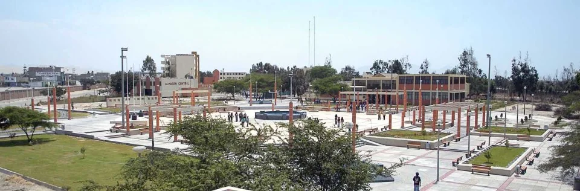

De la primaria al décimo ciclo
Empecé la primaria en el IEP Cristo Peregrino, en Nuevo Chimbote. En secundaria estudié primero en el Gastón Vidal Porturas y después en el Real Pacífico. Hoy estoy en la Universidad Nacional del Santa, mi querida UNS.
- PrimariaIEP Cristo Peregrino
- SecundariaGastón Vidal PorturasVer fotos del colegio
- SecundariaReal PacíficoVer página del colegio
- Universidad · Décimo cicloIngeniería de Sistemas e Informática, UNS

El ingeniero que quiero llegar a ser
Quiero tomarme el tiempo de entender un problema antes de proponer una solución. También quiero poder explicar lo que construyo y hacerme responsable de que funcione para quienes lo van a usar. Eso es parte de lo que significa para mí llegar a ser un buen ingeniero.